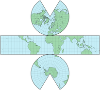
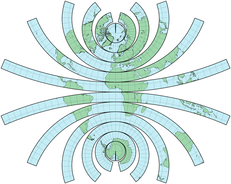
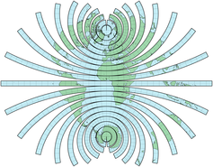
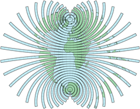
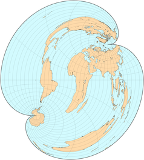
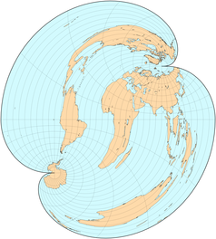

圆锥投影
原文链接:: Conic Projections
介绍
包裹在圆锥上的极地地图
圆锥投影基本都是用于极地的投影面，其主要特征有：
- 经线是等间距的直线，汇聚在一个点上，这个点可能是也可能不是极点。与球体相比，经线之间的角距离总是以一个固定的因子——圆锥常数——来减小
- 纬线是圆的弧线，在经线的汇聚点同心。因此，每条平行线都以直角穿过所有经线，并且沿着每条平行线扭曲的模式是相同的。给定相同的常数，不同的圆锥投影仅通过平行间距来区分
为了说明问题，任何圆锥图都可以被包裹在圆锥上，尽管所有重要的圆锥投影都不是基于简单的透视模型--换句话说，圆锥面总是投影的结果，但很少直接参与其几何构造。
通常，有一条或两条纬线被选为标准线；在透视投影中，它们定义了圆锥体实际与球体相交的位置（分别是正切和正切情况）。在非透视设计中，没有这样的保证，尽管传统上保留了正切和正切的名称。
由于其固有的简单结构和变形模式，圆锥投影已被广泛应用于国家或大规模温带区域地图，而方位角和圆柱形地图分别适用于极地和热带地区，特别是由两条适度接近的子午线界定的区域，如俄罗斯或相邻的美国。椭圆体的情况已经发展为值得注意的大比例圆锥图。另一方面，圆锥投影很少适用于不间断的世界地图，一个半球必然比另一个半球遭受更多的变形。
被称为 "圆锥 "的投影相对较少；然而，许多其他的投影都是由圆锥原理支配的，因为方位盘和圆柱体都是圆锥的极限情况：前者是一个扁平的圆锥，标准平行线在一极，圆锥常数为1；后者是一个顶点在无限远处的圆锥，常数为0，标准纬线在赤道的南北两侧对称。只有一种类型的等面积圆锥投影，而且只有一种是共形的。
圆锥的约束被伪圆锥（有弯曲的经线）和多圆锥（有非中心的平行线）投影所放宽；除了多圆锥的非严格定义，圆形纬线被保留。圆锥和类圆锥是最古老的投影之一，是托勒密地图的基础（约公元100年）。
圆锥，尖的或不尖的:从方位角到柱面的两条平行线

圆锥投影是方位角投影和圆柱投影的一般情况。上面的所有地图占据相同的面积，因为使用的三个投影(实际上是艾伯斯圆锥曲线的所有特定版本)是等面积的，并且以相同的比例因子应用。圆锥图的一般外观受圆锥常数的影响，圆锥常数又由标准平行线(上面用绿色突出显示)决定；地图是会聚在顶点还是包括截头圆锥(平截头体),取决于极点是否是标准纬线。
因为艾伯斯的投影不是由透视过程定义的，所以当被可视化为实际的圆锥模型时，这些地图并不完全适合底层的球体。例如，在标准纬线为北纬90度、南纬30度的版本中，它们不可能都与球体的对应部分在位置上重合，尽管它们相应的长度是相同的。
透视圆锥投影
透视投影使用一组具有共同原点的直线将地球仪和地图上的相应点关联起来，类似于几何透视的光线。与平面和圆柱体相比，圆锥体在光线的来源和方向上提供了更多的自由度。然而，透视圆锥投影从来没有意义。它们很少在地图学教科书中被提及——甚至不像中央圆柱形，作为一个负面的例子。尽管它们的几何简单，但它们几乎没有什么有趣的性质，即使与非常常见且更简单的等距圆锥曲线相比也是如此。

与30°N（任意选择的纬度，布劳恩的立体图除外）相切的透视圆锥投影的横截面。红色的光线显示的是间隔30°的平行线。切线纬度决定了蓝色映射面的延伸，也决定了限定可映射范围的蓝色细轮廓。
简单透视
传统上，透视圆锥投影的几何形状是由一条在切点（或正割情况下的角度中点）接触映射表面的线来定义的。在正视圆锥投影中，所有的光线都平行于该线，并且是表面的法线；在立体投影中，它们从反点射出；在中心投影中，从球体的中心射出。
从上到下依次是正射法、立体透视法和中心法透视圆锥地图，所有地图都有一个标准的平行线30°N。正射地图和中心透视图不能显示南纬60°以南的地区；立体透视图可以显示整个世界，但在南纬60°时被任意截断，而中心图则在南纬35°时被截断。比较地图和上述横断面中的纬线间距和绘制的范围。
正交圆锥投影概括了方位正交和Lambert的圆柱体等面积投影，但除了后者的特殊情况外，它本身并不是等面积的，其切点对面的半球被限制在该点以外的90°纬度。立体圆锥投影弥补了方位立体投影和卡尔-布劳恩的立体圆柱投影之间的差距，并且像后者一样，可以显示整个世界。中心投影是方位角圆锥投影和已经提到的中心圆柱投影的一般情况，它被限制在与正交投影相同的可映射范围内，但在实践中被剪裁到几乎超过一个半球。
其他的解释也是可能的：例如，正射投影可以有与极轴正常的射线，从而使整个世界都可以被映射。或者布劳恩的立体透视地图，以一个极点为中心，而不是以一个反极点为中心。
在历史上，圆心几何模型是1758年P.Murdoch的三个圆锥投影的基础。C.Colles在1794年描述了一个正割案例。他们都没有得到太多的关注。
布劳恩的立体圆锥投影
布劳恩发表的立体圆锥投影（1867年，与他的立体圆柱一起）是在30°N处的透视设计切线，其定义是光线不是从南纬60°的反点射出，而是从南极射出。

非透视圆锥投影
介绍
从历史上看，只有三种基本类型的圆锥投影获得了大量采用。它们的定义如下:
- 正轴投影，沿着所有经线的真实比例
- 等面积
- 等角
作为制图学中的一个常规折衷方案，一旦指定了一个主要特征，就可以确定投影参数——在这种情况下，一条或两条标准纬线——以减少整体变形。这就意味着:
- 对于等距地图，减少沿平行线的最大比例范围
- 对于等面积地图，减少最大角度变形
- 对于共形地图，最小化最大面积失真
- 或者甚至是上述的适当折衷
纬线的最佳选择可以通过最小二乘法等分析或数值方法获得；有时，标准可以归纳为经验法则——例如，在感兴趣的最小和最大纬度之间的1/6和5/6处设置标准纬线(Deetz和Adams)。
等距圆锥投影和其变体
最容易构造的圆锥投影是简单的或等距的圆锥投影，具有均匀间隔的纬线。除了沿标准纬线外，既不等面积也不共形，但对于大多数温带国家来说，这是一个可以接受的折衷方案，它是方位等距投影和圆柱等距投影的一般情况。

它的起源至少可以追溯到克罗狄斯·托勒密的第一张部分世界地图，那是纯粹的赤道以北的圆锥曲线。至少从17世纪开始，它就被应用于地球和星图，偶尔会有所修改，其中一些修改可能是由于绘制大直径弧的困难，而大直径弧经常与小圆锥常数一起出现。今天在当地和区域地图上仍然使用。
一些等距圆锥投影被归功于 "Delisle"（或de "L'isle"，或其他变体）。具有讽刺意味的是，尽管Joseph Nicholas de L'Isle在其家族企业出版的许多地图中确实采用了（真正的）等距圆锥，但他实际创建的投影（约1745年）并非严格意义上的圆锥修正，因为其子午线沿两条限制性直线而非纬线等距连接各点；因此它们一般不会在某一点汇合。
米德(1717年)的另一个改进是基于梯形单元或四边形，每个单元有1英寸宽。在每个细胞中，极限纬线和中心经线是标准线。这张不再是圆锥形的地图将会像蜘蛛网的一部分。米德和适当的“小岛”投影在今天已经完全过时了。
威廉·施耶宁(Wilhelm Schjerning)提出的第一个投影(1882年首次发表，1904年又发表了他的椭圆和心形/斜形建议)是一个北极等距圆锥曲线，常数为1/2。
杰出的数学家莱昂哈德·欧拉在1777年提出了在给定两条极限纬线的情况下选择圆锥常数的标准:在结果中，有时称为欧拉投影，给定一个纵向范围，沿极端纬度的距离误差与沿中心平行线的误差相同，但幅度相反。
俄罗斯和前苏联一样，涵盖了广阔的东西向山脉和中高纬度地区，是圆锥地图的理想主题。因此，一些俄罗斯和苏联制图师探讨了优化标准纬线位置的标准；著名的例子包括Vitkovskiy（1907）、Mendeleev（1907）、Mikhaylov（1911-2）、Krasovskiy（1922-5）和Kavrayskiy（1934）。门捷列夫（Dmitri I. Mendeleev）在对化学做出贡献后更加出名，他喜欢标准纬度90°N和55°N。Vladimir V. Kavrayskiy，其他各种投影的作者，赞成62°N和47°N。


Lambert和Albers的等面积圆锥投影
在其他几个主题中，约翰-兰伯特（Johann Lambert）1772年的大量专著考虑了当经线被表示为由一个非真实的恒定角度分开的直线时--如方位角投影--但不像圆柱形投影那样平行时会发生什么：其结果可以顺便包裹在一个圆锥体上。兰伯特出生在阿尔萨斯（当时是瑞士的一部分），应用微积分来解决以90 N或90 S作为标准纬线来保持区域关系的保真度的情况——即一个极点是一个点，而圆锥在顶点结束。由此产生的建议，即他的圆锥等面积，由此产生的方案，他的圆锥等积投影，或兰伯特的等球狭窄投影(阿德里安·杰曼和奥·斯·亚当斯使用的名称，可能是因为它在缩小子午线间距的同时保留了球体的面积)，后来被Albers推广。
兰伯特的论文用一张欧洲的小地图进行了说明，他推测北纬30°到70°的范围就足够了，第二个标准纬线，没有形状失真，可以放置在北纬50°左右。为了更容易计算，选择了7/8的圆锥常数，确定实际标准纬度为北纬48° 35′25″，在巴黎和慕尼黑之间。另一个简单的选择是0，它产生一个半圆形的世界地图。
对于整个世界的等面积圆锥图，Oscar S.Adams（1945）建议将90°N和18°25′S作为标准纬线，以尽量减少北极和南纬50°平行线之间的形状失真，认为这是人类的重要区域。然而，他更倾向于采用两个半球的横向断续版本。
德国人Heinrich C.Albers在1805年发表了他的圆锥等面积投影，作为Lambert圆锥投影的一般情况，有一条或两条标准平行线，不一定在一个极上。如果标准平行线与赤道等距，或与赤道重合，则该设计退化为朗伯的等面积圆柱形投影，或其重新缩放的变体之一。
人们对Albers了解不多，在很长一段时间内，他的设计很少受到制图文献的关注；直到最近，它才成为美国政府机构和其他地方的等面积（即通常是小比例尺和统计）地图的常见选择。一个有影响力的支持者是亚当斯，他为椭圆体的情况制定了最小化变形的标准和方程式（约1927年）。


近似(基本标准纬度是正确的，但是中央子午线是近似的，因为兰伯特的坐标网格使用了除格林威治以外的参考子午线)兰伯特的欧洲地图的重建，使用了7/8常数的等面积圆锥投影。

兰伯特共形圆锥投影
在1772年的同一专著中，兰伯特在极地方位立体投影和赤道墨卡托投影之间架起了桥梁，再次使用微积分，这次是为了确保角度得到局部保留。为球体和椭球体情况开发的圆锥保形投影，也被称为圆锥共形投影，今天是兰伯特所有原始建议中最重要和最常用的，可与横向墨卡托相比。他用一张欧洲的小地图来说明，选择的极限和标准平行线与等面积版本相同；在保角情况下，圆锥常数是3/4而不是7/8。立体图和墨卡托的是共形圆锥的极限情况，分别是当一个极点是单一的标准纬度和两个标准平行线都围绕赤道对称时（如果不重合，则有适当的重新缩放）。
令人惊讶的是，这种投影几乎没有得到实际应用，其真正的作者身份几乎没有得到承认，直到第一次世界大战，它被法国作战地图所采用（不要与1918年的法国军用Système Lambert相混淆，这是一种基于Tissot的非正交、非等效最小误差投影的网格标准），也被美国USGS所采用。显然，它是由Charles L.Harding在球面情况下独立开发的，并在1808年至1822年应用于星图册。伟大的数学家J.Carl F.Gauss--他本人是保角制图领域的重要贡献者，也是基本定理的作者，该定理意味着没有一个平面地图可以不失真地表示一个球体--承认Harding的工作，但不承认Lambert。约翰-赫歇尔重新发明了兰伯特的球形方程，并提出了一个具有圆锥常数1/3的世界地图（1859年）；他还提出了选择标准平行线的标准，以减少全球尺度的变化。乔治-布尔，现代数字计算机逻辑的先驱，将赫歇尔的方程扩展到椭圆体上（约1860年）。哈丁、高斯、赫歇尔被不同程度地认为是投影的创造者，甚至在像托马斯-克雷格（1882）这样的专业论文中也是如此。
面积与角度失真


变形椭圆可以比较用Albers的等面积（上）和Lambert的保角（下）圆锥投影法绘制的澳大利亚地图的变形。沿着绿色标准纬线的点——15° S和35 S(左)和25 S(右)——没有失真，无论是面积还是角度。注意在等面积圆锥投影中，形状变形的方向是如何在标准纬线和其他地方正交的；请注意，在共形圆锥投影的纬线和其他地方之间，面失真是如何从压缩变为膨胀的。

像通常的等角投影一样，兰伯特圆锥投影在大比例尺地形测绘中使用更好；不间断的世界地图呈现的比例范围太大。它可以由一条或两条标准纬线构成；几乎在每一点上，由于一致性，刻度在每个方向上都是一致的，在标准纬线之间不太真实，在其他地方更大；只有标准纬线没有任何扭曲。共形性在两极都失效:围绕一个，所有子午线角度之和小于360°，而另一个位于无穷远处。
兰伯特的共形圆锥投影应用于世界地图，圆锥常数为赫歇尔建议的1/3。在任何地方都是共形的，除了北极(子午线间距之和为120°而不是360°)和南极，南极无法显示。大尺度畸变在可见极点附近和与之相对的(任意剪裁的)半球是明显的。
最近，共形圆锥投影已经成为许多官方制图机构的标准；在美国地质勘探局，它取代了美洲多圆锥投影。它也是双极斜圆锥投影的基础，是两个圆形扇面的复合体，使用的是以美洲为中心的斜投影；在每个扇面中，原始纬线大致与大陆 "新月 "对齐：在北美洲向东北方向凹陷，在南方向西南方向凹陷。尽管两条标准纬线被巧妙地选择为精确连接，但横跨中美洲和加勒比海的一条狭窄的折衷带是不符合要求的。双极斜圆锥地图发表于1941年，是其他几项工作的基础，由奥斯本-米勒和威廉-布里塞米斯特开发；虽然发布了几张，但相对较小的比例意味着只需要球形方程。
多圆锥投影
介绍
制图师将多圆锥这个名称应用于：
- 与F.R.Hassler有关的一种特殊地图投影，也称为美国多锥体投影
- 从Hassler的投影中衍生出来的一些投影，都是受堆叠的、重叠的圆锥体的启发；它们包括矩形多锥体
- 一类更普遍的投影，在法线上有非中心的圆形平行线。
后一组作品相当杂乱，包括许多除了名字之外与圆锥体几乎没有任何关系的设计。它们包括麦考、金兹堡和萨尔曼诺娃的作品。一些作者扩展了这一定义，将艾托夫投影和哈默投影等非圆形纬线也包括在内。
从等距圆锥曲线到美国多圆锥曲线
 |
 |
 |
 |
用一系列的圆锥投影或地壳映射成堆叠的圆锥地图，有助于直观地理解多圆锥的概念，每个圆锥体的标准纬线都与纬度范围最匹配。当果壳的数量增长到无穷大时，每个扇形都瘦成一缕，结果接近于一个连续的多锥图，由于许多缺口必须在外围填补，很明显比例失真在增长。然而，如果使用等距圆锥扇形，则沿任何纬线都没有距离失真，沿中央子午线也完全没有。
（美国）多圆锥投影

普通的多圆锥投影通常应用于局部或区域地图，而不是世界地图。
在普通的圆锥投影中，只有一条或两条纬线——在真正的透视投影中圆锥和球面重合——是具有正确比例的标准线。然而，地图可以沿着纬线分成几个带，每个带适合不同的圆锥；这类似于多圆柱概念。圆锥常数从两极的1变为赤道的0，因此条带不会接触，除非沿着中央子午线。当使用无限多个圆锥时，每个圆锥最佳地与包含单一平行的薄带相切，间隙消失；如果基础投影是等距二次曲线，则中央子午线具有恒定的正确比例，现在连续的结果是经典的或普通的多圆锥投影，也称为美国多圆锥投影。
瑞士人Ferdinand R. Hassler被认为设计了美国多锥体投影（约1820年），当时他领导的政府机构在其大部分历史时期被称为美国海岸和大地测量局--今天的国家大地测量局，隶属于国家海洋和大气管理局。直到1920年左右，大多数官方大比例尺地图都采用了椭圆的形式，并被其他一些国家和官方机构采用。
经典的多圆锥投影有圆形的纬线（除了赤道），都有恒定和正确的比例，但不是同心的。每条纬线的曲率与在其纬度处相切的圆锥体上的对应线相同。同样的比例适用于笔直的中央经线；所有其他经线都是弯曲的。这种投影既不是等面积的，也不是等角的，它更适合于地方或区域地图。与等面积圆锥投影和等角圆锥投影相比，它的主要缺点是比例尺变化范围更广，在美国的机构中，这些投影和横轴墨卡托基本上都取代了它。

 
矩形(作战办公室)多圆锥投影
同样是在美国海岸和大地测量局开发的（1853年），哈斯勒投影最著名的修改版被英国陆军部广泛用于大规模制图，因此它的通用名称是。它也被称为矩形多圆锥投影，原因是格网角度，而不是整体地图形状。
在矩形多圆锥投影中，纬线是圆弧，同样沿直线中央子午线等距排列。然而，它们的尺度不是恒定的，为了使每条子午线以直角穿过每条纬线而改变。这不是符合性的充分条件，结果也不等同。此外，只有赤道（常见情况）或围绕赤道对称的两条纬线有真正的长度。
矩形多圆锥投影的用法类似于经典多圆锥投影；事实上，对于小区域来说，它们几乎无法区分。


改进的多圆锥投影
查尔斯-拉勒芒对经典的多圆锥投影进行了修改，用于《国际世界地图》系列，这是一套1 : 1000000比例尺的独立图幅（该项目也被称为百万地图或世界百万分之一地图），具有标准化的符号和命名法。最初是基于1913年左右的英国地形测量局，后来由联合国维护。必须克服相当多的困难，因为每个国家最初都应该提供自己的地图；实际上，许多国家既没有资源，也没有专业知识来进行自己的地理调查。1980年左右，该项目似乎变得停滞不前，实际出版的地图不到计划中的一半。然而，图幅的索引系统今天仍在其他项目中使用。
在拉勒芒正式采用的投影中，每张地图由一个四边形组成，由两条相隔4°的平行线为界，均为标准线。所有纬线都是非中心圆弧，其曲率与经典的多面体的曲率相同。然而，子午线是直线，但不汇聚于一点。在赤道附近，边界经线的间距为6°，与中心相距2°的两条是标准线。四边形的宽度在60°N以北和60°S以南变为12°，在76°纬度之后又变为24°。
由于选择了标准纬线和直经线，任何一对相邻的地图都可以无缝隙地连接起来；但是，如果地图同时在一个以上的方向上连接，则无法避免出现缝隙。像普通的和矩形的多面体一样，该投影既不是保形的也不是等面积的。